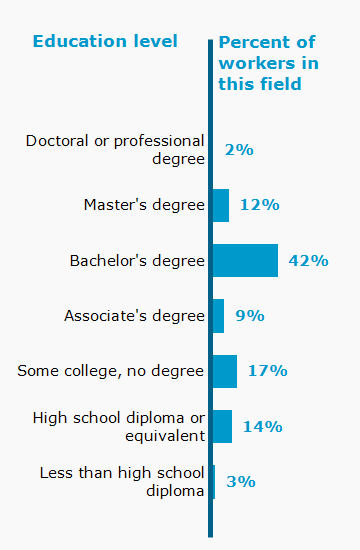

Educational programs blend artistic fundamentals like visual composition, color theory, and drawing with technical training in modeling, texturing, lighting, and physics-based simulations. Students typically learn industry-standard tools such as Autodesk Maya, Blender, Houdini, and Nuke through hands-on lab work and collaborative studio projects. Because the industry prioritizes practical capability over degrees alone, aspiring artists use their education to build a professional showreel or portfolio demonstrating mastery in specialized areas like compositing, effects, or character animation.

Education in 3D visual effects is shifting rapidly toward specialized degrees, online academies, and real-time engine certifications to keep pace with fast-evolving production technologies.